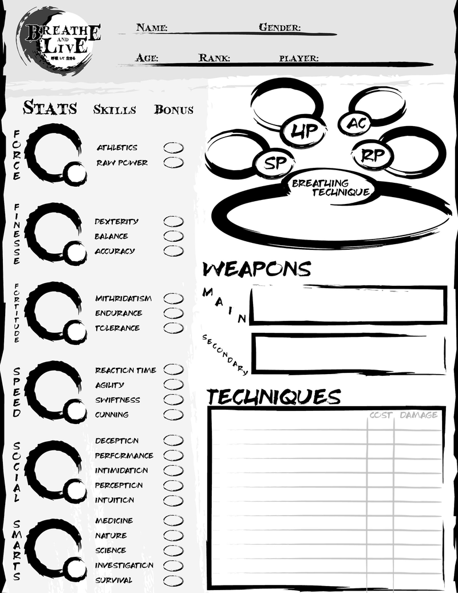
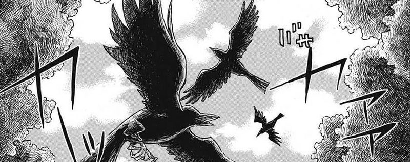

Início › Fundamentos
Criação de Personagem
A criação de personagem em Breathe and Live é simples — quatro passos e você está pronto para caçar.

Os quatro passos
- Primeiro — Atributos base
- Decida seus 6 atributos base. Existem vários métodos para determiná-los, e todos funcionam igualmente bem.
- Segundo — Estilo de luta
- Escolha entre usar técnicas de respiração como um espadachim ou comer carne de demônio com a demonificação. Pode ser uma decisão difícil, pois afeta como as batalhas serão travadas pelo resto da campanha.
- Terceiro — Texto de história (flavor)
- Adicione detalhes narrativos que expliquem o tempo de treinamento do personagem. Não são essenciais para a jogabilidade, mas ajudam muito na escrita do personagem — veja as tabelas de Treinador e Parceiro abaixo.
- Quarto — Habilidades
- Usando um número fixo de pontos, decida entre habilidades extrassensoriais, características sobre-humanas ou aprender ao máximo as formas da sua técnica de respiração.
Feito tudo isso, a criação do personagem está completa.
Texto de história — Treinador
Usando 3 pontos, decida com quem seu espadachim estudou, como foi o treinamento e com o que ele saiu dele.
O passado do seu Cultivador era…
| Um espadachim comum (0 pts) | Um ex-Hashira (1 pt) | Um Hashira atual (2 pts) |
|---|
No seu treinamento, você…
| Teve dificuldade, demorando mais que o normal (0 pts) | Teve um ano mediano (1 pt) | Era talentoso (2 pts) |
|---|
Seu Cultivador te enviou à Seleção Final com…
| Nenhum traje identificador (0 pts) | Uma peça sutil de identificação (1 pt) | Um visual instantaneamente reconhecível (2 pts) |
|---|
Texto de história — Parceiro
Usando 3 novos pontos, decida quem é o corvo kasugai companheiro do seu espadachim e seus possíveis traços.
Como seu corvo kasugai se sente sobre você…?
| Não gosta do seu espadachim (0 pts) | Gosta do seu espadachim (1 pt) | Ama o seu espadachim (2 pts) |
|---|
Sobre o seu corvo… ele é…
| Um corvo mais velho (0 pts) | Um corvo mais jovem (1 pt) | Nem é um corvo?! (2 pts) |
|---|
Se não for um corvo, é um… (1d12)
| Pardal | Grou | Abutre |
| Falcão | Gaio-azul | Canário |
| Águia | Coruja | Garça |
| Flamingo | Albatroz | Pavão |
Corvo Kasugai

Corvos kasugai (ou quaisquer outras aves designadas pelo Esquadrão) auxiliam os espadachins em suas jornadas. Estes são os comandos que podem ser dados a eles a qualquer momento.
Corvos kasugai têm 1 de vida, 3 de CA e podem realizar 1 ação em combate.
| Comando | Efeito |
|---|---|
| Buscar Item Pequeno | Seu corvo recupera um item pequeno que você descrever, com o melhor de sua capacidade, na área ao redor. |
| Entregar Mensagem (Curta) | Seu corvo entrega quase instantaneamente uma mensagem ou nota curta a um local, pessoa ou entidade próxima. |
| Entregar Mensagem (Longa) | Ao longo de uma única sessão, seu corvo transporta uma mensagem a um local, pessoa ou entidade distante. |
| Carregar Item | Seu corvo carrega um item pequeno que você fornecer por um tempo combinado ou até que condições definidas sejam cumpridas. |
| Procurar por ______ | Seu corvo busca ativamente um item desejado, trazendo-o se for pequeno o bastante, ou guiando você a um local solicitado. |